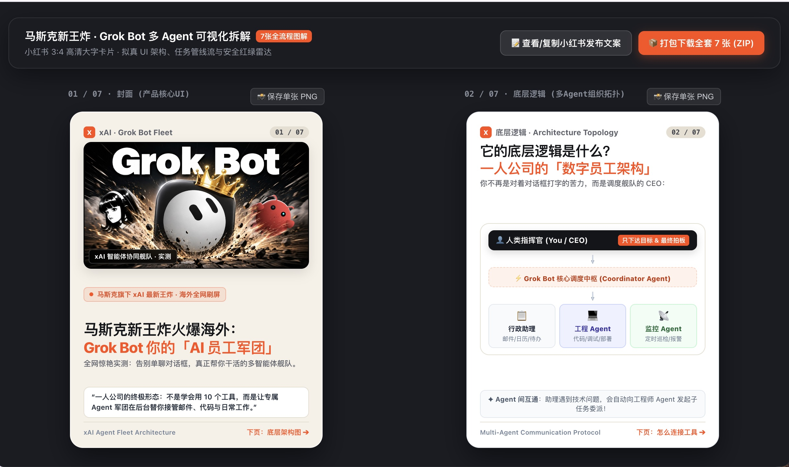

Threads｜Brui：用 Antigravity 與 Gemini 把 YouTube 連結轉成可分享知識卡片

一句話摘要
這則 Threads 提出一個很適合知識工作者與內容創作者的 skill：丟入 YouTube 連結後，先用 Gemini 快速理解影片，再由 Antigravity 生成 6–10 張知識卡片、HTML 網頁與 600–800 字「我看完後的分享式摘要」，最後可一鍵打包下載圖片。
為什麼保存
這篇值得放入 AI 學習雷達，因為它把「看影片」轉成一條完整內容再製工作流：YouTube 理解、結構化摘要、卡片化視覺輸出、心得口吻改寫、圖片批次下載。這正好對應欒帥現有的 LINE 分享 → Hermes 歸檔 → Markdown 知識庫 → 公開頁面的流程，也可延伸成課程教材、社群圖卡或企業內訓摘要產線。
原文核心流程
- 下載 Google Antigravity。
- 把需求交給 Antigravity：做一個 skill，當分享任何 YouTube 連結時，自動產生 HTML 網頁檔。
- 內容先拆成 6–10 張卡片；順序是先取得連結，再輸出文字內容結構，確認後開始生成 HTML。
- 卡片設計：
- 首圖：截取 YouTube 影片封面並加上標題。
- 內頁：用可視化方式呈現內容結構。
- 支援一鍵打包下載圖片。
- 每支影片再生成 600–800 字摘要，口吻設定為「我自己看完後總結分享」。
圖片內容補充
附圖展示的是這種卡片產出後的樣貌：主題為「馬斯克新王炸・Grok Bot 多 Agent 可視化拆解」，包含 7 張全流程圖解、首圖封面、底層邏輯頁與「打包下載全套 7 張 ZIP」按鈕。也就是說，原文的重點不是 Grok Bot 本身，而是「把複雜內容拆成小紅書／社群可分享知識卡」的生成介面與輸出格式。
對欒帥的應用價值
- 可做成 AI 學習雷達的「影片轉圖卡」模組：YouTube URL → 影片理解 → 卡片大綱 → HTML 預覽 → PNG/ZIP 匯出。
- 可補強課程教材製作流程，把長影片拆成 6–10 張課堂導讀卡。
- 可與 Hermes skill 系統結合，建立專門處理 YouTube 連結的 reusable workflow。
- 可和既有知識庫部署流程串接，讓卡片與長文摘要同時進入公開知識庫。
可直接改寫成的提示詞方向
請幫我做一個 skill：當我分享任何 YouTube 連結時，先理解影片內容並輸出文字結構，等我確認後，生成一個 HTML 網頁，把內容拆成 6–10 張社群知識卡。首圖使用 YouTube 封面與標題，內頁用可視化圖解呈現重點；支援每張卡片下載 PNG，也支援一鍵打包 ZIP。最後再產出 600–800 字摘要，口吻是「我自己看完後整理分享」。
後續追蹤
- 測試 Gemini 對 YouTube 影片的直接理解穩定性與可引用性。
- 評估 Antigravity 是否適合產出可長期維護的 skill，或改用 Hermes / Claude Code / Codex 實作。
- 若要產品化，需加入卡片模板、品牌色、字體、圖像版權與影片來源引用規範。